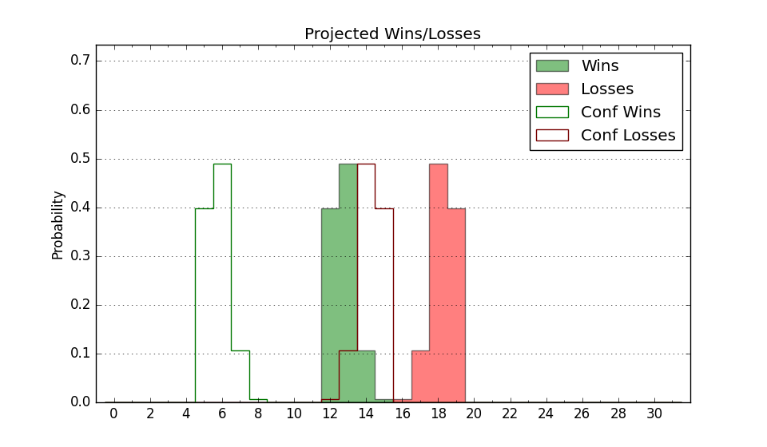

| Home | Game Probabilities | Conferences | Preseason Predictions | Odds Charts | NCAA Tournament |
| City: | Atlanta, Georgia | |
| Conference: | ACC (14th)
| |
| Record: | 5-12 (Conf) 12-16 (Overall) | |
| Ratings: | Comp.: 3.5 (136th) Net: 3.5 (136th) Off: 106.9 (147th) Def: 103.5 (143rd) SoR: 0.1 (123rd) |
| Remaining | ||||||
|---|---|---|---|---|---|---|
| Date | Opponent | Win Prob | Pred. | |||
| 3/2 | Florida St. (91) | 50.0% | L 73-74 | |||
| 3/5 | @ Wake Forest (25) | 9.4% | L 66-82 | |||
| 3/9 | @ Virginia (48) | 13.5% | L 54-66 | |||
| Previous | Game Score | |||||
| Date | Opponent | Win Prob | Result | Off | Def | Net |
| 11/6 | Georgia Southern (295) | 89.1% | W 84-62 | 2.9 | 13.7 | 16.6 |
| 11/9 | Howard (277) | 87.1% | W 88-85 | -8.7 | -14.8 | -23.5 |
| 11/14 | UMass Lowell (134) | 64.6% | L 71-74 | -17.1 | 2.1 | -14.9 |
| 11/22 | @Cincinnati (44) | 12.2% | L 54-89 | -15.0 | -10.4 | -25.4 |
| 11/28 | Mississippi St. (37) | 29.8% | W 67-59 | -4.1 | 22.7 | 18.6 |
| 12/2 | Duke (13) | 16.8% | W 72-68 | 8.4 | 14.0 | 22.4 |
| 12/5 | @Georgia (98) | 25.0% | L 62-76 | -15.0 | 7.9 | -7.2 |
| 12/9 | Alabama A&M (339) | 94.7% | W 70-49 | -10.1 | 14.1 | 4.1 |
| 12/16 | (N) Penn St. (83) | 33.0% | W 82-81 | 5.2 | -0.9 | 4.3 |
| 12/21 | (N) Massachusetts (84) | 33.4% | W 73-70 | -0.9 | 12.3 | 11.4 |
| 12/22 | @Hawaii (168) | 44.5% | W 73-68 | 11.1 | 4.4 | 15.5 |
| 12/24 | (N) Nevada (40) | 19.2% | L 64-72 | -2.7 | 4.6 | 1.9 |
| 1/3 | @Florida St. (91) | 22.7% | L 71-82 | 1.5 | -4.4 | -2.9 |
| 1/6 | Boston College (85) | 48.5% | L 87-95 | 21.0 | -25.2 | -4.2 |
| 1/9 | Notre Dame (124) | 60.6% | L 68-75 | -8.1 | -8.5 | -16.6 |
| 1/13 | @Duke (13) | 5.6% | L 79-84 | 19.1 | 0.6 | 19.7 |
| 1/16 | @Clemson (24) | 8.4% | W 93-90 | 29.6 | -3.1 | 26.5 |
| 1/20 | Virginia (48) | 34.7% | L 66-75 | 9.9 | -17.4 | -7.5 |
| 1/23 | Pittsburgh (46) | 33.7% | L 64-72 | 4.5 | -8.6 | -4.1 |
| 1/27 | @Virginia Tech (60) | 15.6% | L 67-91 | 5.5 | -25.1 | -19.6 |
| 1/30 | North Carolina (10) | 15.4% | W 74-73 | 5.2 | 14.8 | 20.0 |
| 2/3 | @North Carolina St. (82) | 20.4% | L 76-82 | 8.9 | -0.6 | 8.3 |
| 2/6 | Wake Forest (25) | 26.2% | L 51-80 | -32.9 | 5.5 | -27.4 |
| 2/10 | @Louisville (180) | 47.5% | L 67-79 | -13.0 | -4.1 | -17.2 |
| 2/14 | @Notre Dame (124) | 31.2% | L 55-58 | 0.2 | 0.6 | 0.8 |
| 2/17 | Syracuse (86) | 48.5% | W 65-60 | -12.8 | 19.5 | 6.7 |
| 2/21 | Clemson (24) | 23.7% | L 57-81 | -9.5 | -18.2 | -27.7 |
| 2/24 | @Miami FL (75) | 18.9% | W 80-76 | 18.2 | 1.1 | 19.3 |
| Stats & Trends | |||||
|---|---|---|---|---|---|
| Current | Day | Week | Month | Season | |
| Composite | 3.5 | +0.0 | +0.9 | -0.0 | -0.8 |
| Comp Rank | 136 | -1 | +9 | -3 | -25 |
| Net Efficiency | 3.5 | +0.0 | +0.9 | +0.0 | -- |
| Net Rank | 136 | -1 | +9 | -2 | -- |
| Off Efficiency | 106.9 | +0.0 | +0.7 | -1.9 | -- |
| Off Rank | 147 | -- | +4 | -45 | -- |
| Def Efficiency | 103.5 | +0.0 | +0.3 | +1.9 | -- |
| Def Rank | 143 | +1 | +8 | +49 | -- |
| SoS Rank | 9 | +1 | +3 | +15 | -- |
| Exp. Wins | 12.7 | -0.0 | +0.9 | +0.4 | +0.3 |
| Exp. Conf Wins | 5.7 | -0.0 | +0.9 | +0.4 | -1.6 |
| Conf Champ Prob | 0.0 | -- | -- | -- | -0.3 |

| Advanced Stats | ||
|---|---|---|
| Stat | Value | Rank |
| Off Eff FG % | 0.506 | 178 |
| Off Ast Ratio | 0.153 | 100 |
| Off ORB% | 0.331 | 43 |
| Off TO Rate | 0.138 | 116 |
| Off FT Ratio | 0.318 | 213 |
| Def Eff FG % | 0.463 | 43 |
| Def Ast Ratio | 0.136 | 121 |
| Def ORB% | 0.269 | 137 |
| Def TO Rate | 0.114 | 352 |
| Def FT Ratio | 0.296 | 105 |